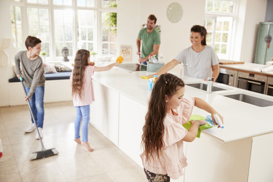

1. Jugar juegos de mesa
2. Leer en familia
3. Ver series y películas
4. Convivir con las mascotas

5. Comer juntos
6. Jugar videojuegos en familia
7. Hacer ejercio en familia
8. Limpiar la casa en familia
9. Practicar algun deporte en familia
10. Hacer manualidades en familia